電子回路に用いられる基本素子の中で能動素子のひとつであるダイオードの特性を測定する．またダイオードの応用回路として整流回路について調べる．
N 形または P 形半導体と金属の接合あるいは N 形半導体と P 形半導体の接合をダイオード（diode）とよび， N 形半導体側をカソード，P
形半導体側をアノードとよぶ．
ダイオードの記号は図1(a)で表され，電流 I と電圧 V の関係は
$$I = I_0 {exp(qV/kT)-1 }$$
で与えられる．ここに $I_0$ はダイオードによって決まる定数で，$k$はボルツマン定数，$T$ は絶対温度， $q$ は電子の電荷量である．
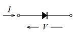
(a)回路記号
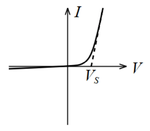
(b)特性
図1. ダイオード
式関係をグラフで表すと図1(b)のようになる．ダイオードの電流はアノードからカソードへの一方向にのみ流れ，その逆方向へはほとんど流れない．すなわちダイオードの両端電圧が順方向バイアス（アノードが正，カソードが負）のときは両端電圧は電流が変化してもあまり変らずほぼ一定であり，素子のインピーダンスは低く近似的に短絡状態と見なせる．この時のダイオードの両端電圧 $Vs$ を飽和電圧という．飽和電圧はゲルマニウムダイオードで 0.2V，シリコンダイオードで 0.6～0.7V程度である．またダイオードの両端電圧が逆方向バイアス（アノードが負，カソードが正）のときは両端電圧にかかわらず電流はほとんど流れないので，素子のインピーダンスは高く開放状態と見なせる．
このような性質を利用して，実際の応用回路ではダイオードは検波器や整流器の他， 順方向バイアス時で電流がそれほど大きくない時には両端電圧が $Vs$ にほぼ等しいことを利用して低電圧の直流定電圧が必要な時に用いられる．
ダイオードの逆方向電圧を増加しある値を越えると図2(b)に示すように電流が急激に増加し端子間の電圧はほぼ一定となる．この現象をツェナー効果といい，この電圧 $Vz$ をツェナー電圧という．またこのダイオードをツェナーダイオード（Zener diode）または定電圧ダイオードとよぶ．ツェナーダイオードは流れる電流が変化しても両端の電圧は変らないから電圧が $Vz$ の直流定電圧源として利用できる．
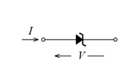
(a)回路記号
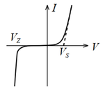
(b)特性
図2. ツェナーダイオード
ダイオードの電流はアノードからカソードへの一方向にのみ流れ，その逆方向へはほとんど流れないという性質を利用すると，交流から直流を作ることができる．
図3(a)に示すようにダイオードに交流電圧 $v$ をかけると，$v$ が正の時にだけ 電流 $i$ が流れ，$v$ が負の時には電流は流れないので，$v$ に対する $i$ の波形は 図3(b)に示すようになる． 電流 $i$は，その大きさは時間と共に変化するがその符合は常に正で変らない，脈流とよばれる直流の一種となる．このようにダイオードを利用すれば，交流から直流を作ることができる．これをダイオードの整流作用という．図3(a)の回路を半波整流回路とよぶ．
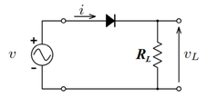
(a)回路図
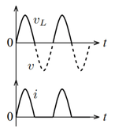
(b)波形
図3.半波整流回路
この回路では脈流は直流成分の他に交流成分を多く含んでいるのでそのままでは実用に適さない．
この交流成分を取り除き，時間的に大きさが変化しない直流を得るためには，例えば図4(a)の回路のように，整流回路の負荷抵抗に並列にコンデンサを接続すればよい．
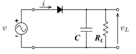
(a)回路図
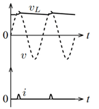
(b)波形
図4.半波整流回路（整流あり）
この回路の動作は次のようになる．入力電圧が出力電圧より高い期間のみダイオードは導通状態となり順方向に電流が流れ，出力側の負荷抵抗に電流を流すとともにコンデンサを充電する．ダイオードに電流が流れるのは一周期の中のごく僅かな期間である．残りの期間はダイオードは非導通状態となって入力側からは電流は流れないが，負荷抵抗にはコンデンサの放電電流が流れる．コンデンサの容量は十分大きいものとすると，ダイオードが非導通の間のコンデンサの放電電流によるコンデンサ両端の電圧の変化はごくわずかなので，出力側にはほぼ一定の電圧が得られる．しかしこの出力電圧は完全に一定ではなく多少変動する．この変動をリップル（ripple）という．このように，脈流から交流成分を取り除き，直流成分のみを得る回路のことを平滑回路とよぶ．平滑回路としてはリップルをできるだけ小さくすることが望まれる．
可変直流電圧源
マルチメータ
正弦波交流信号発生装置
オシロスコープ
抵抗（1 Ω，220Ω 2kΩ）
電解コンデンサ（100 $\mu$F 耐圧 50 V）
ダイオード（1SS133，RD4.7E）
シミュレーションソフトMATLABが利用可能な計算機（各自所有のノートパソコンまたは 大学内の教育用端末）
使用するツールボックス（アドオン製品）
※シミュレーションは各個人で実施するため，シミュレーション環境を構築したパソコンを持ち込む必要はない．各自所有のパソコンのシミュレーション環境構築方法は別途指示があるため，その指示に従い，各自で準備すること．
図5においてダイオードの両端にかかる電圧 $V$ とダイオードに流れる電流 $I$について以下の2種類の電圧-電流（$V–I$）特性のグラフを作成する．
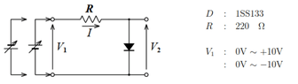
図5.ダイオード電圧ー電流特性実験回路
用いるダイオードは小信号用ダイオード1SS133とツェナーダイオードRD4.7Eの二種類とする.（入力直流電圧を 10V以上にして各素子に過大な電流を流さないよう注意する）
※グラフを作成しながら測定を行うこと．またグラフの目盛のとり方に注意すること．
半波整流回路（平滑コンデンサあり及びなし）について，入力電圧$v_1$，出力電圧 $v_2$，ダイオードに流れた電流$i(=−v_3)$をオシロスコープで観測して動作を確認，理解する．
1SS133とする．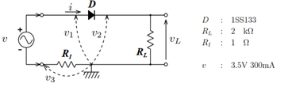
図6.半波整流実験回路
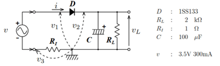
図7.半波整流実験回路
コンデンサには極性のあるアルミ電解コンデンサを用いるので，接続方向に注意する．
4.1 ダイオードの電圧‒電流特性および4.2 半波整流回路について，
シミュレータを用いて同一回路・同一条件下でシミュレーション実験を行い，
シミュレーション結果と測定結果を比較する．ただし，シミュレーションの元となる回路は別途配布する．
シミュレーションに用いるダイオードは1SS133のみとする．
結果を比較しやすくするために，測定結果とシミュレーション結果は同一のグラフに示すこと．
また，平滑化を有する半波整流回路において，抵抗値を変えてシミュレーションを行い，
出力波形がどのように変化するかを観測し，考察する.
レポートに本実験の結果を以下にまとめること．全て記載されていなければ受理されない．
平滑あり・平滑なしの2つの整流回路において，それぞれ記録する．
レポートには下記の内容を記述すること．ただし，必ずしも下記に記載されている順でなくてもよい．
[1] 岩田聡編著，"新インターユニバーシティ電子回路"，オーム社•早原悦朗，"基礎からの電気・電子工学電子回路"，森北出版
[2] 早原悦朗，"電気電子回路 2 電子回路編"，森北出版
[3] 藤井信生，"なっとくする電子回路"，講談社
レポート提出前に，各自チェックリストで確認すること．下記が守られていない場合は再提出となることもある．
表紙が付いているか．テンプレートに従っているか（Windows＆word以外：PDF表示したときにテンプレートに従っているか）．
表紙に氏名や学籍番号．共同実験者氏名が正しいか．
記載すべき項目（7章の項目）が全て記載されているか．
すべての図表が文章に引用されているか（本文中に「図1」や「表1」などと含まれているか）．
文章中に出てくる変数の説明・定義がされているか．
キャプションが入っているか．キャプションの位置は正しい（図の下）か．
縦軸・横軸のラベルや目盛の数値が付いているか．適切な表現となっているか．
測定値はプロットされているか．波形はプロット（マーカー）無しの線で示されているか．
キャプションが入っているか．キャプションの位置は正しい（表の上）か．
表の枠は適切についているか．
適切な単位([V]や[I])が付いているか．
有効数字が適切か（小数桁が必要以上に多くなりすぎていないか）．
単に図表を示すだけでなく，その図表から読み取れることを記述しているか．
結果（実験から読み取れる内容）と考察が区別されているか．
（結果）実測結果とシミュレーション結果に誤差が生じていた。
（考察）この理由は・・・であると考えられる。